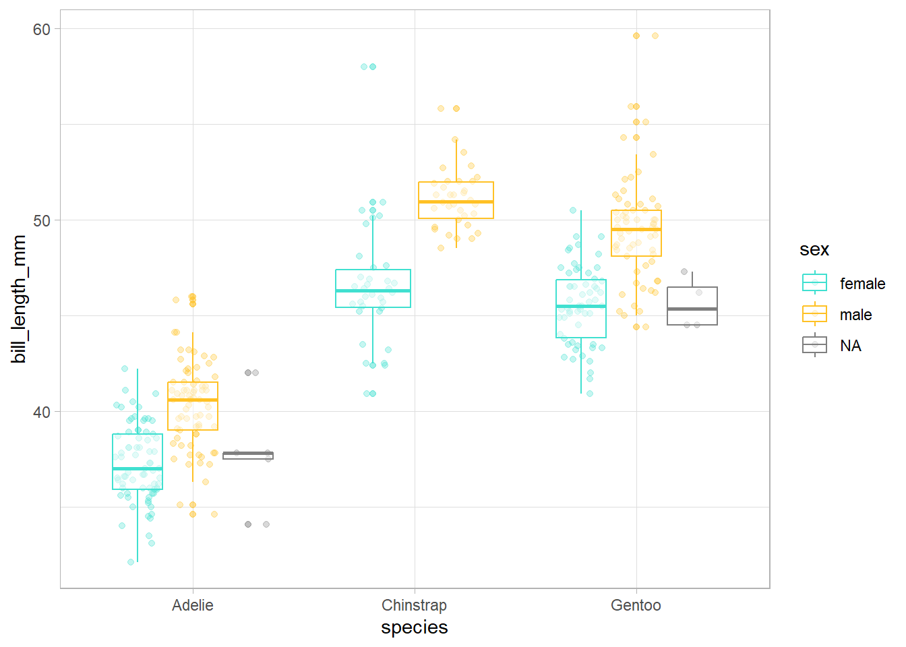
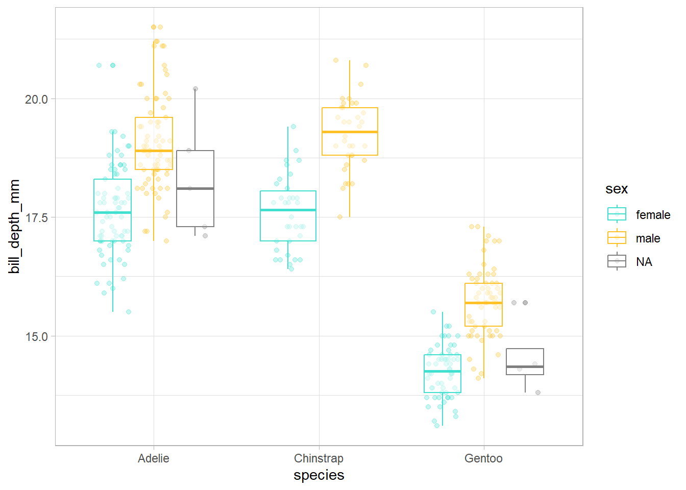
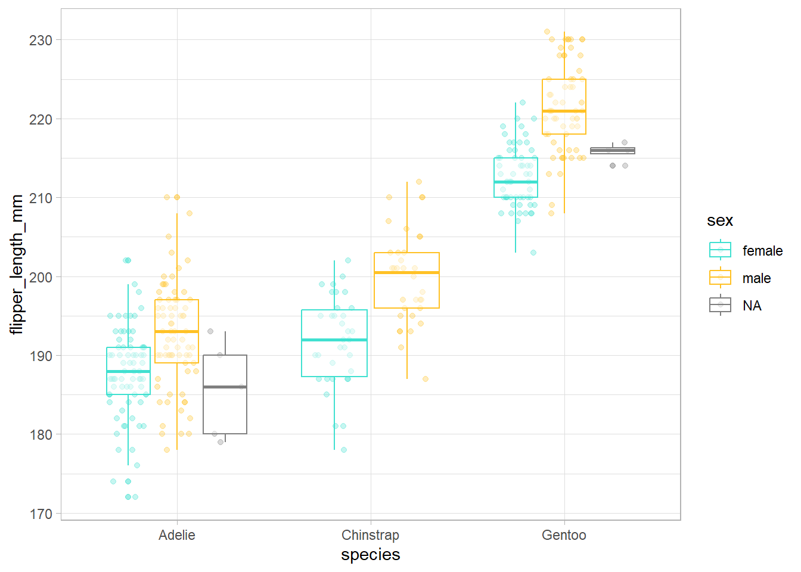
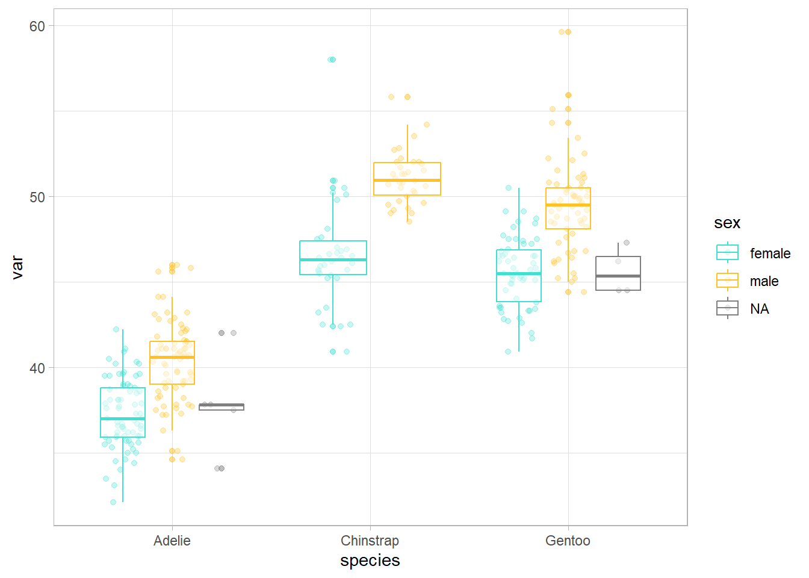
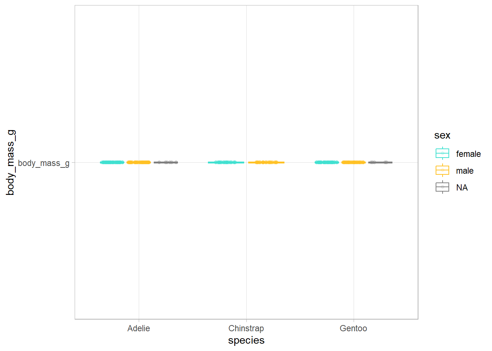
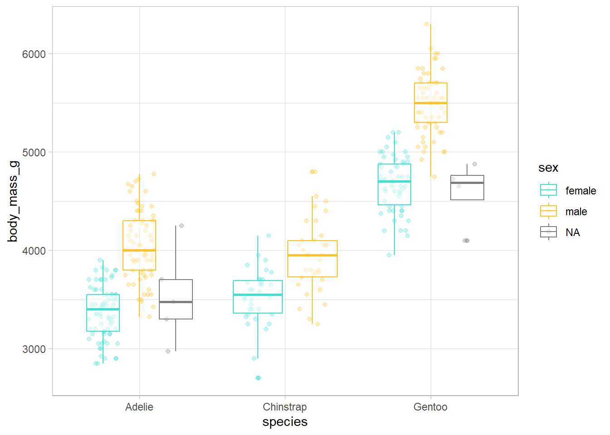
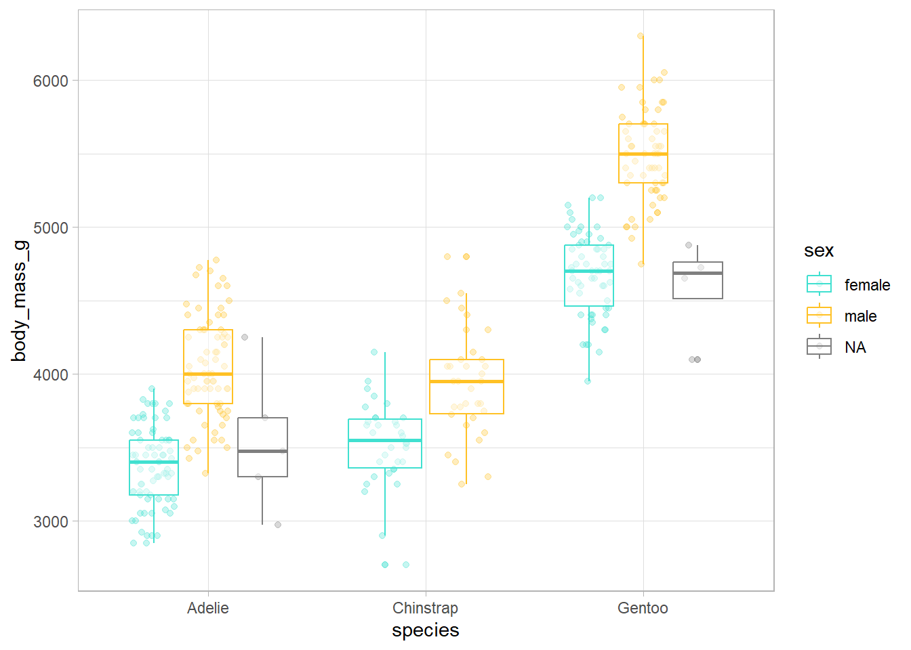
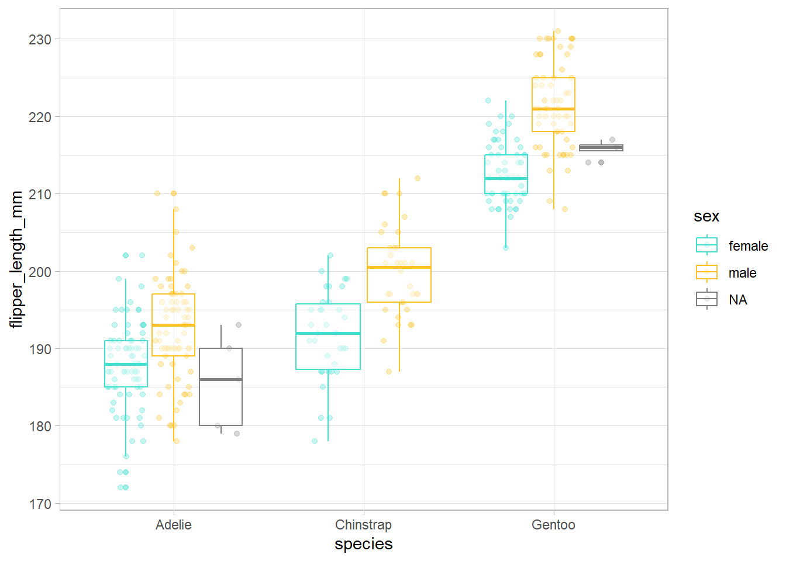

library(tidyverse)
d <- c("hi", "hola", "hola", "hi")
length(unique(d)) [1] 2d |> unique() |> length() # Ctrl + Shift + M para poner un pipe[1] 2Curso: Programación y análisis estadístico en R. CADIC, Ushuaia, Argentina
Entender la filosofía de {tidyverse}.
Aprender funciones básicas que nos permitan importar, explorar, limpiar, transformar y manejar datos.
Aprender a escribir funciones.
Entender la programación iterativa mediante el paquete {purrr} de {tidyverse}.
Tidyverse es una colección de paquetes (meta-paquete) de R. El núcleo contiene ocho paquetes principales (readr, tibble, dplyr, tidyr, stringr, forcats, ggplot2 y purrr), que comparten el diseño, la gramática y la estructura de los datos que necesitan. En el centro de la filosofía de tidyverse se encuentra la noción de “datos ordenados” (tidy data). Hadley Wickham (principal desarrollador de tidyverse) los define como “fáciles de manipular, modelar y visualizar, y que tienen una estructura específica: cada variable es una columna, cada observación es una fila y cada valor es una celda”. Tidyverse puede considerarse un dialecto del lenguaje de programación R que discretiza funciones amplias de R base (p. ej. merge) en diversas funciones específicas (p. ej. left_join, right_join).
Los tres principios básicos de este meta-paquete son:
Centrado en humanos: tiene un diseño intuitivo que facilita su uso y accesibilidad para el usuario, ya que está diseñado específicamente para respaldar las actividades de un analista de datos humano.
Consistencia: todos los paquetes están diseñados para trabajar con datos ordenados (tidy data), y las funciones de los paquetes tienen una nomenclatura común y congruente. Esto permite que un usuario que aprende sobre una función o paquete pueda aplicar ese conocimiento a otros, facilitando así la tarea de recordar y deducir código.
Componiblidad: permite al usuario resolver problemas complejos dividiéndolos en pequeñas partes, que pueden combinarse utilizando el operador pipe, ya sea el del paquete magrittr (%>%) o el creado recientemente en R base (|>).
💡Los dos operador pipe tienen pequeñas diferencias pero en general el comportamiento es el mismo.
💡Para más información sobre tidyverse y las diferencias con R base te recomendamos leer Tidyverse: colección de paquetes de R para la ciencia de datos.
library(tidyverse)
d <- c("hi", "hola", "hola", "hi")
length(unique(d)) [1] 2d |> unique() |> length() # Ctrl + Shift + M para poner un pipe[1] 2En este curso realizaremos las distintas tareas que forman parte de la ciencia de datos utilizando tidyverse, aunque también se podrían llevar a cabo con R base.
taludes <- read_delim(file = "taludes.csv", delim = ",")
taludes# A tibble: 91 × 3
Biomasa Luz Agua
<dbl> <chr> <chr>
1 3.04 Nivel 1 Sequia estival
2 3.57 Nivel 1 Sequia estival
3 3.67 Nivel 1 Sequia estival
4 4.59 Nivel 1 Sequia estival
5 4.34 Nivel 1 Sequia estival
6 2.25 Nivel 1 Sequia estival
7 4.12 Nivel 1 Sequia estival
8 2.45 Nivel 1 Sequia estival
9 4.46 Nivel 1 Sequia estival
10 3.51 Nivel 1 Sequia estival
# ℹ 81 more rowstaludes_bien <- read_delim(file = "taludes.csv",
delim = ",", col_types = list(Luz = "f", Agua = "f"))
taludes_bien# A tibble: 91 × 3
Biomasa Luz Agua
<dbl> <fct> <fct>
1 3.04 Nivel 1 Sequia estival
2 3.57 Nivel 1 Sequia estival
3 3.67 Nivel 1 Sequia estival
4 4.59 Nivel 1 Sequia estival
5 4.34 Nivel 1 Sequia estival
6 2.25 Nivel 1 Sequia estival
7 4.12 Nivel 1 Sequia estival
8 2.45 Nivel 1 Sequia estival
9 4.46 Nivel 1 Sequia estival
10 3.51 Nivel 1 Sequia estival
# ℹ 81 more rowsView(taludes_bien)
summary(taludes_bien) Biomasa Luz Agua
Min. :2.120 Nivel 1:30 Sequia estival:46
1st Qu.:3.531 Nivel 2:31 Lluvia estival:45
Median :4.053 Nivel 3:30
Mean :3.993
3rd Qu.:4.609
Max. :5.347 glimpse(taludes_bien)Rows: 91
Columns: 3
$ Biomasa <dbl> 3.039767, 3.573515, 3.669172, 4.592334, 4.337278, 2.254230, 4.…
$ Luz <fct> Nivel 1, Nivel 1, Nivel 1, Nivel 1, Nivel 1, Nivel 1, Nivel 1,…
$ Agua <fct> Sequia estival, Sequia estival, Sequia estival, Sequia estival…names(taludes_bien)[1] "Biomasa" "Luz" "Agua" taludes_bien <- taludes_bien |>
rename(biomasa = Biomasa, # nombre nuevo = nombre viejo
nivel_luz = Luz,
agua_estival = Agua)📝 Ajustar sangría de código: Ctrl + i; Reformatear código: Ctrl + Shift + a
📝 Usar espacios antes y después de = y después de , hace mucho más fácil identificar los argumentos de la función y, en general, todos los componentes.
set.seed(123)
mean(rnorm(10, mean = 50, sd = 25) / 12, trim = 0.2) [1] 3.966805set.seed(123)
mean(rnorm(10,mean=50,sd=25)/12,trim=0.2)[1] 3.966805taludes_bien |>
slice(1) # shortcut para el pipe: CTRL + SHIFT + M # A tibble: 1 × 3
biomasa nivel_luz agua_estival
<dbl> <fct> <fct>
1 3.04 Nivel 1 Sequia estivaltaludes_bien |>
slice(1, 5)# A tibble: 2 × 3
biomasa nivel_luz agua_estival
<dbl> <fct> <fct>
1 3.04 Nivel 1 Sequia estival
2 4.34 Nivel 1 Sequia estivaltaludes_bien |>
slice(1:6)# A tibble: 6 × 3
biomasa nivel_luz agua_estival
<dbl> <fct> <fct>
1 3.04 Nivel 1 Sequia estival
2 3.57 Nivel 1 Sequia estival
3 3.67 Nivel 1 Sequia estival
4 4.59 Nivel 1 Sequia estival
5 4.34 Nivel 1 Sequia estival
6 2.25 Nivel 1 Sequia estivaltaludes_bien |>
slice(-c(1:5))# A tibble: 86 × 3
biomasa nivel_luz agua_estival
<dbl> <fct> <fct>
1 2.25 Nivel 1 Sequia estival
2 4.12 Nivel 1 Sequia estival
3 2.45 Nivel 1 Sequia estival
4 4.46 Nivel 1 Sequia estival
5 3.51 Nivel 1 Sequia estival
6 3.49 Nivel 1 Sequia estival
7 2.80 Nivel 1 Sequia estival
8 3.91 Nivel 1 Sequia estival
9 3.16 Nivel 1 Sequia estival
10 3.81 Nivel 1 Sequia estival
# ℹ 76 more rowstaludes_bien |>
arrange(biomasa)# A tibble: 91 × 3
biomasa nivel_luz agua_estival
<dbl> <fct> <fct>
1 2.12 Nivel 2 Lluvia estival
2 2.25 Nivel 1 Sequia estival
3 2.35 Nivel 3 Lluvia estival
4 2.45 Nivel 1 Sequia estival
5 2.49 Nivel 3 Lluvia estival
6 2.54 Nivel 3 Lluvia estival
7 2.70 Nivel 3 Lluvia estival
8 2.73 Nivel 3 Lluvia estival
9 2.80 Nivel 1 Sequia estival
10 2.86 Nivel 3 Lluvia estival
# ℹ 81 more rowstaludes_bien |>
arrange(desc(biomasa))# A tibble: 91 × 3
biomasa nivel_luz agua_estival
<dbl> <fct> <fct>
1 5.35 Nivel 3 Sequia estival
2 5.30 Nivel 3 Sequia estival
3 5.21 Nivel 1 Lluvia estival
4 5.17 Nivel 2 Lluvia estival
5 5.16 Nivel 1 Lluvia estival
6 5.13 Nivel 2 Sequia estival
7 5.10 Nivel 2 Lluvia estival
8 5.06 Nivel 3 Sequia estival
9 4.98 Nivel 2 Lluvia estival
10 4.94 Nivel 1 Lluvia estival
# ℹ 81 more rowsSe necesita un vector de filtrado que contenga valores lógicos (TRUE/FALSE).
taludes_bien |>
filter(nivel_luz == "Nivel 1") # filtrar por filas que cumplen un patrón # A tibble: 30 × 3
biomasa nivel_luz agua_estival
<dbl> <fct> <fct>
1 3.04 Nivel 1 Sequia estival
2 3.57 Nivel 1 Sequia estival
3 3.67 Nivel 1 Sequia estival
4 4.59 Nivel 1 Sequia estival
5 4.34 Nivel 1 Sequia estival
6 2.25 Nivel 1 Sequia estival
7 4.12 Nivel 1 Sequia estival
8 2.45 Nivel 1 Sequia estival
9 4.46 Nivel 1 Sequia estival
10 3.51 Nivel 1 Sequia estival
# ℹ 20 more rowstaludes_bien |>
filter(nivel_luz == "Nivel 1" & biomasa > 4) # combinar criterios: AND# A tibble: 16 × 3
biomasa nivel_luz agua_estival
<dbl> <fct> <fct>
1 4.59 Nivel 1 Sequia estival
2 4.34 Nivel 1 Sequia estival
3 4.12 Nivel 1 Sequia estival
4 4.46 Nivel 1 Sequia estival
5 4.73 Nivel 1 Lluvia estival
6 4.94 Nivel 1 Lluvia estival
7 4.37 Nivel 1 Lluvia estival
8 4.79 Nivel 1 Lluvia estival
9 5.16 Nivel 1 Lluvia estival
10 4.55 Nivel 1 Lluvia estival
11 4.72 Nivel 1 Lluvia estival
12 4.23 Nivel 1 Lluvia estival
13 4.83 Nivel 1 Lluvia estival
14 4.48 Nivel 1 Lluvia estival
15 4.58 Nivel 1 Lluvia estival
16 5.21 Nivel 1 Lluvia estivaltaludes_bien |>
filter(nivel_luz == "Nivel 1" | biomasa > 5) # combinar criterios: OR# A tibble: 36 × 3
biomasa nivel_luz agua_estival
<dbl> <fct> <fct>
1 3.04 Nivel 1 Sequia estival
2 3.57 Nivel 1 Sequia estival
3 3.67 Nivel 1 Sequia estival
4 4.59 Nivel 1 Sequia estival
5 4.34 Nivel 1 Sequia estival
6 2.25 Nivel 1 Sequia estival
7 4.12 Nivel 1 Sequia estival
8 2.45 Nivel 1 Sequia estival
9 4.46 Nivel 1 Sequia estival
10 3.51 Nivel 1 Sequia estival
# ℹ 26 more rowstaludes_bien |>
filter(nivel_luz %in% c("Nivel 1", "Nivel 3")) # combinar criterios: %in% # A tibble: 60 × 3
biomasa nivel_luz agua_estival
<dbl> <fct> <fct>
1 3.04 Nivel 1 Sequia estival
2 3.57 Nivel 1 Sequia estival
3 3.67 Nivel 1 Sequia estival
4 4.59 Nivel 1 Sequia estival
5 4.34 Nivel 1 Sequia estival
6 2.25 Nivel 1 Sequia estival
7 4.12 Nivel 1 Sequia estival
8 2.45 Nivel 1 Sequia estival
9 4.46 Nivel 1 Sequia estival
10 3.51 Nivel 1 Sequia estival
# ℹ 50 more rows💡“Macrobenthos.txt” es una base de datos sobre la abundancia de distintos grupos taxonómicos de macroinvertebrados marinos (Zuur et al. 2009).
Crea un subset de datos que contenga las filas de la 1 a la 10 y de la 390 a la 400.
De la tabla original, crea un subset que NO contenga el Taxon número 1. Pista: revisa los operadores de R.
Crea un subset con las observaciones del Taxon 2 donde se haya registrado una abundancia mayor de 50 o menor o igual a 5. Pista: necesitarás paréntesis para filtrar. ¿Cuántas filas han quedado?
Se necesita un vector de selección que contenga valores lógicos (TRUE/FALSE).
taludes_bien |>
select(biomasa, agua_estival)# A tibble: 91 × 2
biomasa agua_estival
<dbl> <fct>
1 3.04 Sequia estival
2 3.57 Sequia estival
3 3.67 Sequia estival
4 4.59 Sequia estival
5 4.34 Sequia estival
6 2.25 Sequia estival
7 4.12 Sequia estival
8 2.45 Sequia estival
9 4.46 Sequia estival
10 3.51 Sequia estival
# ℹ 81 more rows?select # operators y selection helpers
taludes_bien |>
select(contains("a"))# A tibble: 91 × 2
biomasa agua_estival
<dbl> <fct>
1 3.04 Sequia estival
2 3.57 Sequia estival
3 3.67 Sequia estival
4 4.59 Sequia estival
5 4.34 Sequia estival
6 2.25 Sequia estival
7 4.12 Sequia estival
8 2.45 Sequia estival
9 4.46 Sequia estival
10 3.51 Sequia estival
# ℹ 81 more rows# se pueden utilizar todo tipo de patrones de texto: https://rstudio.github.io/cheatsheets/strings.pdf
taludes_bien |>
select(nivel_luz, everything()) # se puede usar para reordenar variables# A tibble: 91 × 3
nivel_luz biomasa agua_estival
<fct> <dbl> <fct>
1 Nivel 1 3.04 Sequia estival
2 Nivel 1 3.57 Sequia estival
3 Nivel 1 3.67 Sequia estival
4 Nivel 1 4.59 Sequia estival
5 Nivel 1 4.34 Sequia estival
6 Nivel 1 2.25 Sequia estival
7 Nivel 1 4.12 Sequia estival
8 Nivel 1 2.45 Sequia estival
9 Nivel 1 4.46 Sequia estival
10 Nivel 1 3.51 Sequia estival
# ℹ 81 more rowsCon el data.frame “Macrobenthos.txt”, crea un nuevo data.frame que contenga las variables relacionadas con el medio (de organic matter a temperature). Pista: mira la ayuda de select para ahorrar caracteres.
Crea un nuevo objeto con el taxon al principio y que incluya las demás columnas excepto el esfuerzo de muestreo (effort).
taludes_bien |>
mutate(
# definir una variable desde cero
ID = 1:nrow(taludes_bien),
supervivencia = as.factor(sample(
c(0, 1),
size = nrow(taludes_bien),
replace = TRUE
)),
# utilizar una variable para calcular otra
carbono = biomasa * rnorm(
n = nrow(taludes_bien),
mean = 0.4,
sd = 0.2
)
) |>
select(ID, everything())# A tibble: 91 × 6
ID biomasa nivel_luz agua_estival supervivencia carbono
<int> <dbl> <fct> <fct> <fct> <dbl>
1 1 3.04 Nivel 1 Sequia estival 0 0.931
2 2 3.57 Nivel 1 Sequia estival 1 0.877
3 3 3.67 Nivel 1 Sequia estival 0 3.05
4 4 4.59 Nivel 1 Sequia estival 1 0.611
5 5 4.34 Nivel 1 Sequia estival 1 2.17
6 6 2.25 Nivel 1 Sequia estival 0 1.46
7 7 4.12 Nivel 1 Sequia estival 0 2.17
8 8 2.45 Nivel 1 Sequia estival 0 1.18
9 9 4.46 Nivel 1 Sequia estival 0 2.49
10 10 3.51 Nivel 1 Sequia estival 1 1.30
# ℹ 81 more rowstaludes_bien |>
mutate(
# sobreescribir una variable. En concreto fct_recode
# sirve para redefinir los niveles de un factor
agua_estival = fct_recode(
agua_estival, sequia = "Sequia estival", lluvia = "Lluvia estival"),
nivel_luz = fct_recode(
nivel_luz,
`1` = "Nivel 1",
`2` = "Nivel 2",
`3` = "Nivel 3"
)
)# A tibble: 91 × 3
biomasa nivel_luz agua_estival
<dbl> <fct> <fct>
1 3.04 1 sequia
2 3.57 1 sequia
3 3.67 1 sequia
4 4.59 1 sequia
5 4.34 1 sequia
6 2.25 1 sequia
7 4.12 1 sequia
8 2.45 1 sequia
9 4.46 1 sequia
10 3.51 1 sequia
# ℹ 81 more rowstaludes_bien |>
mutate(
# utilizar varias variables para calcular otra nueva
estres = case_when(
# "Si el nivel de luz es 1 y hay sequia, el estrés será alto"
nivel_luz == "Nivel 1" & agua_estival == "Sequia estival" ~ "alto",
nivel_luz == "Nivel 3" & agua_estival == "Lluvia estival" ~ "bajo",
TRUE ~ "intermedio"
)
)# A tibble: 91 × 4
biomasa nivel_luz agua_estival estres
<dbl> <fct> <fct> <chr>
1 3.04 Nivel 1 Sequia estival alto
2 3.57 Nivel 1 Sequia estival alto
3 3.67 Nivel 1 Sequia estival alto
4 4.59 Nivel 1 Sequia estival alto
5 4.34 Nivel 1 Sequia estival alto
6 2.25 Nivel 1 Sequia estival alto
7 4.12 Nivel 1 Sequia estival alto
8 2.45 Nivel 1 Sequia estival alto
9 4.46 Nivel 1 Sequia estival alto
10 3.51 Nivel 1 Sequia estival alto
# ℹ 81 more rows# repetimos todo lo anterior concatenando todo el proceso:
taludes_trans <- taludes_bien |>
mutate(
ID = 1:nrow(taludes_bien),
supervivencia = as.factor(sample(
c(0, 1),
size = nrow(taludes_bien),
prob = c(0.4, 0.6),
replace = TRUE
)),
carbono = biomasa * rnorm(
n = nrow(taludes_bien),
mean = 0.4,
sd = 0.2
)
) |>
mutate(
agua_estival = fct_recode(agua_estival, sequia = "Sequia estival", lluvia = "Lluvia estival"),
nivel_luz = fct_recode(
nivel_luz,
`1` = "Nivel 1",
`2` = "Nivel 2",
`3` = "Nivel 3"
)
) |>
mutate(
estres = case_when(
nivel_luz == 1 &
agua_estival == "sequia" ~ "alto",
nivel_luz == 3 &
agua_estival == "lluvia" ~ "bajo",
TRUE ~ "intermedio"
)
)data.frame resumiendo cada grupo a una filataludes_trans |>
summarise(c_min = min(carbono),
c_max = max(carbono))# A tibble: 1 × 2
c_min c_max
<dbl> <dbl>
1 0.165 3.86taludes_trans |>
group_by(estres) |>
summarise(biomasa_min = min(biomasa),
biomasa_mean = mean(biomasa),
biomasa_max = max(biomasa))# A tibble: 3 × 4
estres biomasa_min biomasa_mean biomasa_max
<chr> <dbl> <dbl> <dbl>
1 alto 2.25 3.51 4.59
2 bajo 2.35 3.30 4.58
3 intermedio 2.12 4.32 5.35Con el data.frame macrobenthos, cuenta el número de casos que hay en cada periodo de muestreo.
Cuenta el número de casos distintos que hay de esfuerzo de muestreo.
Calcula la media de la turbidez para cada taxón.

stocks <- tibble(
year = c(2015, 2015, 2016, 2016),
half = c( 1, 2, 1, 2),
return = c(1.88, 0.59, 0.92, 0.17)
)
stocks |>
pivot_wider(names_from = year, values_from = return) # A tibble: 2 × 3
half `2015` `2016`
<dbl> <dbl> <dbl>
1 1 1.88 0.92
2 2 0.59 0.17stocks |>
pivot_wider(names_from = year, values_from = return) |>
pivot_longer(cols = `2015`:`2016`, names_to = "year", values_to = "return")# A tibble: 4 × 3
half year return
<dbl> <chr> <dbl>
1 1 2015 1.88
2 1 2016 0.92
3 2 2015 0.59
4 2 2016 0.17*_join() añade columnas de y (segundo data.frame) a x (primer data.frame), haciendo coincidir las observaciones en función de la variable común.

# join: left, right, full, inner
set.seed(123)
bloques <- tibble(ID = 1:nrow(taludes_trans),
bloque = sample(x = 1:2, size = nrow(taludes_trans), replace = TRUE))
taludes_trans <- taludes_trans |>
left_join(bloques) |>
select(ID, bloque, everything())write_delim(taludes_trans, file = "taludes_trans.csv", delim = ";")
# en file hay que especificar el directorio donde queremos que se guarde. Si no, se guardará en el directorio de trabajo (getwd())La creciente disponibilidad de datos y de versatilidad de los programas de análisis han provocado el incremento en la cantidad y complejidad de los análisis que realizamos. Esto hace cada vez más necesaria la eficiencia en el proceso de gestión y análisis de datos. Una de las posibles formas para optimizar estos procesos y acortar los tiempos de trabajo para los usuarios de R es la programación basada en funciones. Las funciones permiten automatizar tareas comunes (por ejemplo, leer diferentes bases de datos) simplificando el código.
Como las funciones en R son objetos, es posible llamarlas a través de otras funciones e iterar este proceso, lo que constituye la base de la programación funcional y convierte a R en una herramienta muy poderosa. Las iteraciones sirven para realizar la misma acción a múltiples entradas.
# install.packages("palmerpenguins")
library(palmerpenguins)
df <- penguins |>
select(bill_length_mm, bill_depth_mm, flipper_length_mm, body_mass_g)
df_rescaled1 <- df |>
mutate(
bill_length_mm = (bill_length_mm - min(bill_length_mm, na.rm = TRUE)) / (
max(bill_length_mm, na.rm = TRUE) - min(bill_length_mm, na.rm = TRUE)
),
bill_depth_mm = (bill_depth_mm - min(bill_depth_mm, na.rm = TRUE)) / (
max(bill_depth_mm, na.rm = TRUE) - min(bill_length_mm, na.rm = TRUE)
),
flipper_length_mm = (flipper_length_mm - min(flipper_length_mm, na.rm = TRUE)) / (
max(flipper_length_mm, na.rm = TRUE) - min(flipper_length_mm, na.rm = TRUE)
),
body_mass_g = (body_mass_g - min(body_mass_g, na.rm = TRUE)) / (max(body_mass_g, na.rm = TRUE) - min(body_mass_g, na.rm = TRUE))
)
View(df_rescaled1)
rescale01 <- function(x) {
rng <- range(x, na.rm = TRUE)
(x - rng[1]) / (rng[2] - rng[1])
}
df_rescaled2 <- df |>
mutate(
bill_length_mm = rescale01(x = bill_length_mm),
bill_depth_mm = rescale01(x = bill_depth_mm),
flipper_length_mm = rescale01(x = flipper_length_mm),
body_mass_g = rescale01(x = body_mass_g)
)
View(df_rescaled2)
df_rescaled3 <- lapply(df, rescale01)
View(df_rescaled3)Las principales ventajas de la programación funcional (uso de funciones e iteraciones) son:
Se recomienda seguir el principio “do not repeat yourself” (DRY principle): cada unidad de conocimiento o información debe tener una representación única, inequívoca y autoritativa en un sistema.
Escribir una función ya merece la pena cuando has copiado y pegado más de dos veces lo mismo (don’t be WET! - Write Everything Twice). Cuantas más veces esté repetido un código, en más sitios necesitarás actualizarlo si hay algun cambio y más aumenta la probabilidad de error.
Según el tipo de output generado (última expresión ejecutada dentro de la función) hay dos tipos de funciones:
Las funciones de transformación transforman el objeto que entra en la función (primer argumento) y devuelven otro objeto o el anterior modificado. Los funcionales son tipos especiales de funciones de transformación.

Las funciones secundarias (side-effect functions) tienen efectos colaterales y ejecutan una acción, como guardar un archivo o dibujar un plot. Algunos ejemplos de funciones secundarias que se usan comunmente son: library(), setwd(), plot(), write_delim()… Estas funciones retornan de forma invisible el primer argumento, que no se guarda, pero puede ser usado en un pipeline.
En general, sintácticamente, las funciones tienen tres componentes:
function()function(), tradicionalmente entre llaves.nombre1_v1 <- function(x, y) {
paste(x, y, sep = "_")
}
nombre1_v2 <- function(x, y) paste(x, y, sep = "_")
nombre1_v3 <- \(x, y) paste(x, y, sep = "_")
nombre1_v1("Vero", "Cruz")[1] "Vero_Cruz"nombre1_v2("Vero", "Cruz")[1] "Vero_Cruz"nombre1_v3("Vero", "Cruz")[1] "Vero_Cruz"📝 Si la función tiene más de dos lineas es mejor usar llaves siempre para que quede bien delimitada. La llave de apertura nunca debe ir sola pero sí la de cierre (excepto con else). Las sangrías también ayudan mucho a entender la jerarquía del código dentro de las funciones.
En general las funciones tienen un nombre que se ejecuta cuando se necesita como hemos visto hasta ahora, pero esto no es obligatorio. Algunos paquetes como {purrr} o las funciones de la familia apply permiten el uso de funciones anónimas para iterar.
map(penguins, function(x) length(unique(x))) $species
[1] 3
$island
[1] 3
$bill_length_mm
[1] 165
$bill_depth_mm
[1] 81
$flipper_length_mm
[1] 56
$body_mass_g
[1] 95
$sex
[1] 3
$year
[1] 3penguins |>
map(function(x) length(unique(x)))$species
[1] 3
$island
[1] 3
$bill_length_mm
[1] 165
$bill_depth_mm
[1] 81
$flipper_length_mm
[1] 56
$body_mass_g
[1] 95
$sex
[1] 3
$year
[1] 3📝 Mejor reservar el uso de funciones anónimas para funciones cortas y simples. Si la función es larga, ocupa varias líneas o tenemos que usarla con frecuencia mejor darle un nombre.
Genera tu primera función que divida un valor siempre entre 100.
💡Atajo para escribir funciones: escribir la palabra fun + tabulador
Imaginad que para un set de datos quisieramos hacer un gráfico de distribución de cada variable numérica, en función de otra variable categórica que nos interese especialmente, para ver cómo se distribuye.
penguins_num <- penguins |>
select(species, sex, where(is.numeric)) # nos interesan las diferencias entre especie y sexo
ggplot(penguins_num, aes(x = species, y = bill_length_mm, color = sex)) + geom_point(position = position_jitterdodge(), alpha = 0.3) +
geom_boxplot(alpha = 0.5) +
scale_color_manual(values = c("turquoise", "goldenrod1")) +
theme_light()
ggplot(penguins_num, aes(x = species, y = bill_depth_mm, color = sex)) + geom_point(position = position_jitterdodge(), alpha = 0.3) +
geom_boxplot(alpha = 0.5) +
scale_color_manual(values = c("turquoise", "goldenrod1")) +
theme_light()
ggplot(penguins_num, aes(x = species, y = flipper_length_mm, color = sex)) + geom_point(position = position_jitterdodge(), alpha = 0.3) +
geom_boxplot(alpha = 0.5) +
scale_color_manual(values = c("turquoise", "goldenrod1")) +
theme_light() # etc
Hemos copiado un código más de dos veces para realizar una misma acción (es decir, un gráfico para ver como se distribuye una variable en función de otras dos que se mantienen constantes) así que hay que considerar la posibilidad de que estemos necesitando una función. A continuación vamos a seguir unos sencillos pasos para transformar cualquier código repetido en función.
Analizar el código: ¿cuáles son las partes replicadas? ¿cuantas entradas tenemos? ¿cuáles varían y cuáles no?
Simplificar y reanalizar duplicaciones
var <- penguins_num$bill_length_mm
ggplot(penguins_num, aes(x = species, y = var, color = sex)) +
geom_point(position = position_jitterdodge(), alpha = 0.3) +
geom_boxplot(alpha = 0.5) +
scale_color_manual(values = c("turquoise", "goldenrod1")) +
theme_light()
var <- body_mass_g Error: object 'body_mass_g' not foundvar <- "body_mass_g"
ggplot(penguins_num, aes(x = species, y = var, color = sex)) +
geom_point(position = position_jitterdodge(), alpha = 0.3) +
geom_boxplot(alpha = 0.5) +
scale_color_manual(values = c("turquoise", "goldenrod1")) +
theme_light() +
ylab(var) # grafico erroneo 
ggplot(penguins_num, aes(x = species, y = .data[[var]], color = sex)) +
geom_point(position = position_jitterdodge(), alpha = 0.3) +
geom_boxplot(alpha = 0.5) +
scale_color_manual(values = c("turquoise", "goldenrod1")) +
theme_light() +
ylab(var) # grafico correcto
👀 La función ggplot necesita argumentos (data-variable) que estén dentro del data.frame que va a representar. Para poder generalizar la función hemos guardado el nombre de la variable en un objeto (tipo character), pero ggplot no acepta characters. Por ello necesitamos utilizar una función intermedia que sí los acepte. Para resolver problemas comunes de programación funcional derivados de la non-standard evaluation de tidyverse mira este enlace.
Elegir un nombre para la función (📝). Idealmente tiene que ser corto y evocar lo que la función hace. En general, debe ser un verbo (p. ej. imputar_valores) mientras que los argumentos son sustantivos (p. ej. data, variable, etc.). Usar un sustantivo para una función está permitido si la función calcula algo muy conocido (p. ej. mean()) o si sirve para acceder a partes de un objeto (p. ej. residuals()). También se recomienda evitar verbos muy genéricos (p. ej. calcular) y si el nombre tiene varias palabras separarlas con guión bajo o mayúsculas, pero ser consistente. Si programas varias funciones que hacen cosas parecidas se recomienda usar el mismo prefijo para todas (p. ej. “str_” en el paquete {stringr}).
Enumerar los argumentos dentro de function() y poner el código simplificado dentro de las llaves.
explorar_penguins <- function (var) {
ggplot(penguins_num, aes(x = species, y = .data[[var]], color = sex)) +
geom_point(position = position_jitterdodge(), alpha = 0.3) +
geom_boxplot(alpha = 0.5) +
scale_color_manual(values = c("turquoise", "goldenrod1")) +
theme_light() +
ylab(var)
}📝 Utiliza comentarios (#) para explicar el razonamiento detrás de tus funciones. Se debe evitar explicar qué se está haciendo o cómo, ya que el propio código ya lo comunica. También se recomienda usar # para separar apartados (Cmd/Ctrl + Shift + R).
explorar_penguins(var = "body_mass_g") Warning: Removed 2 rows containing non-finite outside the scale range
(`stat_boxplot()`).Warning: Removed 2 rows containing missing values or values outside the scale range
(`geom_point()`).
explorar_penguins(var = "flipper_length_mm") Warning: Removed 2 rows containing non-finite outside the scale range
(`stat_boxplot()`).
Removed 2 rows containing missing values or values outside the scale range
(`geom_point()`).
explorar_penguins(var = "bill_depth_mm")Warning: Removed 2 rows containing non-finite outside the scale range
(`stat_boxplot()`).
Removed 2 rows containing missing values or values outside the scale range
(`geom_point()`).Genera una función para estandarizar (es decir, restar la media y dividir por la desviación típica) las variables numéricas de penguins.
En general hay dos grupos: los que especifican los datos y los que especifican detalles de la ejecución de la función. Normalmente los que especifican datos se colocan primero y los de detalle después. Estos últimos suelen tener valores por defecto (los más comunes), para cuando no se especifique nada.
📝 Los nombres de los argumentos deben ser cortos y descriptivos. Hay algunos comunes pero poco descriptivos que ya son conocidos para la mayoría de los usuarios y está bien aprovecharlos:
x, y, z: vectores
w: vector de pesos
df: data frame
i, j: indices numericos, filas y columnas respectivamente
n: longitud o número de filas
p: numero de columnas
na.rm: valores faltantes
Los bucles son recomendables para adentrarse en el mundo de las iteraciones porque hacen cada iteración muy explícita para que quede claro lo que está pasando.

Para programar un bucle es necesario definir tres partes diferentes: la salida, la secuencia y el cuerpo.
set.seed(123)
df_ej <- data.frame(
a = sample(1:5),
b = sample(1:5),
c = sample(1:5) )
salida <- vector("double", 3) # 1. salida
for (i in 1:3) { # 2. secuencia
salida[[i]] <- first(df_ej[[i]]) # 3. cuerpo
}
salida [1] 3 3 2# podriamos generalizar el for
salida <- vector("double", ncol(df_ej)) # 1. salida
for (i in seq_along(df_ej)) { # 2. secuencia
salida[[i]] <- first(df_ej[[i]]) # 3. cuerpo
}
salida [1] 3 3 2# tambien podriamos iterar sobre filas
salida <- vector("double", nrow(df_ej))
for(i in 1:nrow(df_ej)) {
salida[[i]] <- sum(df_ej[i, ])
}
salida[1] 8 6 8 13 10Salida: aquí determinamos el espacio de la salida, es decir, primero tenemos que crear la libreta donde vamos a ir apuntando todos los resultados.
Secuencia: aquí determinamos sobre lo que queremos iterar. Cada ejecución del bucle for asignará un valor diferente de seq_along(y) a i.
Cuerpo: aquí determinamos lo que queremos que haga cada iteración. Se ejecuta repetidamente, cada vez con un valor diferente para i.
Existe la creencia de que los bucles for son lentos, pero la desventaja real de los bucles for es que son demasiado flexibles y pueden realizar muchas tareas diferentes. En cambio, cada funcional ({purrr}, apply) está diseñado para una tarea específica, por lo que en cuanto lo ves en el código, inmediatamente sabes por qué se está utilizando. Es decir, la principal ventaja es su claridad al hacer que el código sea más fácil de escribir y de leer.
Los bucles pueden ser más explícitos en cuanto a que se ve claramente la iteración, pero se necesita más tiempo para entender qué se está haciendo. Por el contrario, los funcionales necesitan un paso más de abstracción. Lo más importante es que soluciones el problema y poco a poco ir escribiendo código cada vez más sencillo y elegante.

Un funcional es una función que toma una función como entrada y devuelve un vector u otro tipo de objeto como salida.
Para programar un funcional, primero, solucionamos el problema para un elemento. Después, generamos una función que nos permita envolver la solución en una función (como lo hicimos en Section 11). Por último, aplicamos la función a todos los elementos que estamos interesados. Es decir, dividimos los problemas grandes en problemas más pequeños y resolvemos cada tarea con una o más funciones.
En tidyverse se iteran procesos mediante el paquete {purrr}. Comparando los funcionales con los bucles, el foco está en la operación que se está ejecutando, y no en el código necesario para iterar sobre cada elemento y guardar la salida.
map(df_ej, first) $a
[1] 3
$b
[1] 3
$c
[1] 2df_ej |>
map(first) $a
[1] 3
$b
[1] 3
$c
[1] 2salida <- vector("list", length = 3)
for (i in 1:3) {
salida[[i]] <- first(df_ej[[i]])
}
salida[[1]]
[1] 3
[[2]]
[1] 3
[[3]]
[1] 2map()map_*() está vectorizado sobre un argumento, p. ej. (x). La función operará en todos los elementos de x, es decir, cada valor si x es un vector, cada columna si x es un data.frame, o cada elemento si x es una lista.
Toma un vector y una función, llama a la función una vez por cada elemento del vector y devuelve los resultados en una lista. map(1:3, f) es equivalente a list(f(1), f(2), f(3)). Es el equivalente de lapply() de R base.
cuadratica <- function(x) {
x ^ 2
}
map_ouput_list <- map(.x = 1:4, .f = cuadratica)
lapply_ouput_list <- lapply(X = 1:4, FUN = cuadratica) 
Generad un vector, una función y aplicadle la función a cada uno de los elementos del vector utilizando map().
Los argumentos que varían para cada ejecución se ponen antes de la función y los argumentos que son los mismos para cada ejecución se ponen después (p. ej. na.rm = T).

map_*()Dedicadle un par de minutos a entender lo que hacen las siguientes funciones:
map_df(df_ej, first)# A tibble: 1 × 3
a b c
<int> <int> <int>
1 3 3 2map_lgl(penguins, is.numeric) species island bill_length_mm bill_depth_mm
FALSE FALSE TRUE TRUE
flipper_length_mm body_mass_g sex year
TRUE TRUE FALSE TRUE penguins_num <- penguins[ , map_lgl(penguins, is.numeric)]
map_dbl(penguins_num, median, na.rm = T) bill_length_mm bill_depth_mm flipper_length_mm body_mass_g
44.45 17.30 197.00 4050.00
year
2008.00 map_chr(penguins, class) species island bill_length_mm bill_depth_mm
"factor" "factor" "numeric" "numeric"
flipper_length_mm body_mass_g sex year
"integer" "integer" "factor" "integer" map_int(penguins, \(x) length(unique(x))) species island bill_length_mm bill_depth_mm
3 3 165 81
flipper_length_mm body_mass_g sex year
56 95 3 3 1:4 |>
map_vec(\(x) as.Date(ISOdate(x + 2024, 12, 03)))[1] "2025-12-03" "2026-12-03" "2027-12-03" "2028-12-03"Sys.time()[1] "2024-12-03 22:46:40 CET"sessionInfo()R version 4.4.2 (2024-10-31 ucrt)
Platform: x86_64-w64-mingw32/x64
Running under: Windows 11 x64 (build 22631)
Matrix products: default
locale:
[1] LC_COLLATE=English_United States.utf8
[2] LC_CTYPE=English_United States.utf8
[3] LC_MONETARY=English_United States.utf8
[4] LC_NUMERIC=C
[5] LC_TIME=English_United States.utf8
time zone: Europe/Paris
tzcode source: internal
attached base packages:
[1] stats graphics grDevices utils datasets methods base
other attached packages:
[1] palmerpenguins_0.1.1 lubridate_1.9.3 forcats_1.0.0
[4] stringr_1.5.1 dplyr_1.1.4 purrr_1.0.2
[7] readr_2.1.5 tidyr_1.3.1 tibble_3.2.1
[10] ggplot2_3.5.1 tidyverse_2.0.0
loaded via a namespace (and not attached):
[1] bit_4.5.0 gtable_0.3.6 jsonlite_1.8.9 crayon_1.5.3
[5] compiler_4.4.2 tidyselect_1.2.1 parallel_4.4.2 scales_1.3.0
[9] yaml_2.3.10 fastmap_1.2.0 R6_2.5.1 labeling_0.4.3
[13] generics_0.1.3 knitr_1.49 htmlwidgets_1.6.4 munsell_0.5.1
[17] pillar_1.9.0 tzdb_0.4.0 rlang_1.1.4 utf8_1.2.4
[21] stringi_1.8.4 xfun_0.49 bit64_4.5.2 timechange_0.3.0
[25] cli_3.6.3 withr_3.0.2 magrittr_2.0.3 digest_0.6.37
[29] grid_4.4.2 vroom_1.6.5 rstudioapi_0.17.1 hms_1.1.3
[33] lifecycle_1.0.4 vctrs_0.6.5 evaluate_1.0.1 glue_1.8.0
[37] farver_2.1.2 fansi_1.0.6 colorspace_2.1-1 rmarkdown_2.29
[41] tools_4.4.2 pkgconfig_2.0.3 htmltools_0.5.8.1